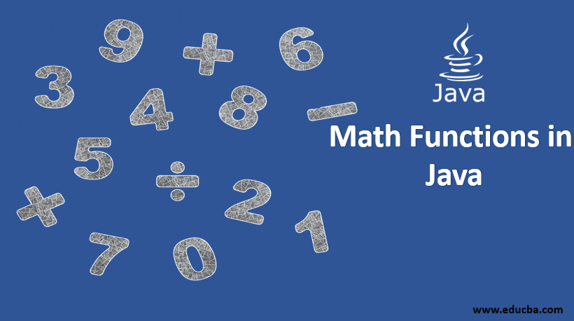

Java Math class provides several methods to work on math calculations
The Java Math class has many methods that allows you to perform
mathematical tasks on numbers.
- what math method
- Math Method
- Math.max(x,y)
- Math.min(x,y)
- Math.sqrt(x)
- Math.abs(x)
- Math.random()
- Math.ceil(x)
- Math.floor(x)
- Math.round(x)